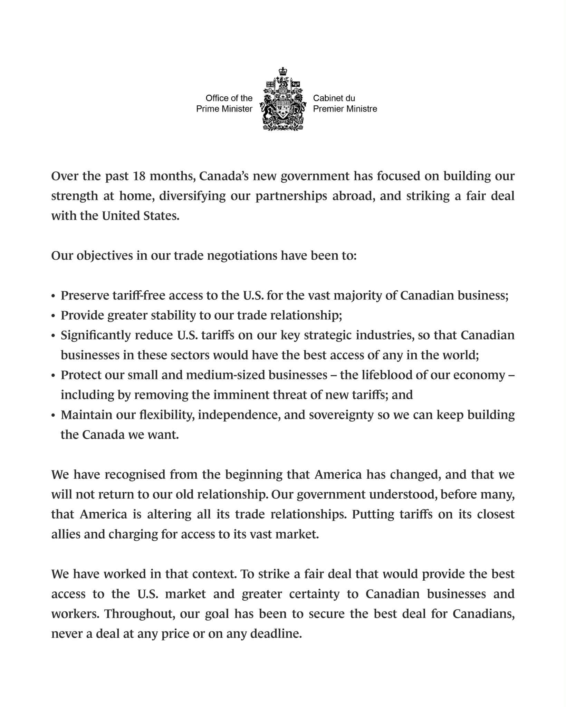
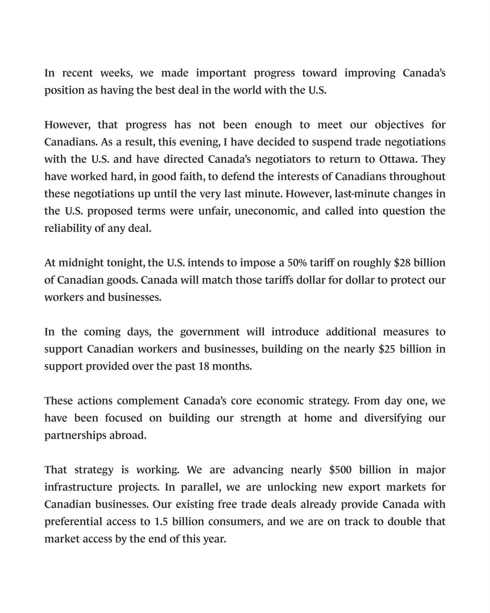
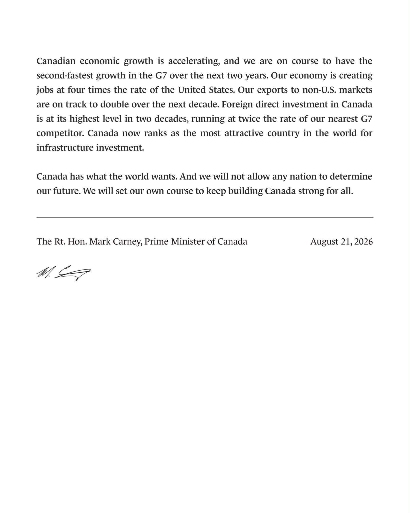

대충 요약하면 어차피 과거 관세로는 못돌아갈 거 다 알고 있고
최대한 캐나다 국민들에게 유리한 방향으로 협상이 진전되고 있었고
실제로 전 세계에서 가장 유리한 조건이 달성되려던 찰나
미국이 갑자기 조건변경 요구하면서 통수를 깠고
테이블 엎어 ㅅㅂ 시전하고 그냥 협상단 귀국시켰다는 이야기..
그래서 이제 미국이 280억달러 규모의 관세를 캐나다에 맥일 예정이고
캐나다도 똑같은 수준으로 보복관세 맥일 거라 함
총리 취임하고 제일 강경한 노선 타는 중인 거 같은데
과연 어떻게 흘러갈까 ㅋㅋ
댓글
수집 당시 댓글 20개
증산역5번출구 · 1 일 전
중간선거 앞이라 미국 아주 ㅈ밥 되가네 역시 미국의 가장 큰 적은 미국이다 ㅋㅋ
토끼겅듀 · 1 일 전
캐나다한테 하는거 보면 이란한테도 어땠는지 알것 같네
크툴루 · 1 일 전
파이브 아이즈가 애꾸가 되었어요
휴먼휴먼 · 1 일 전
그래도 아직 눈깔 4개 남았는데 그것도 조만간 적출되다시피 할 듯ㅋㅋㅋㅋ
종이면봉 · 1 일 전
트럼프 이새끼는 적국이랑 협상해서 뭘 얻어낼 자신이 없으니깐 동맹국만 존나 털고있네 ㅋㅋㅋ 중국이 존나 좋아할듯
굿바이레닌 · 1 일 전
좆럼프 씹 타코년 ㅋㅋ
개잡주 · 1 일 전
느낌이 협상팀들이 협상 잘하고있는대 트럼프함테 보고 올라가고나서 트럼프가 더 조건 추가하라고 ㅈㄹ해서 저리된거같은느낌이 ㅋㅋㅋㅋ
푸른그림자 · 1 일 전
러트닉이 막판에 들어가서 마음에 안든다고 수정했다고 하더만
번마 · 1 일 전
이디오크러시생각나네
락스계 · 1 일 전
자 다시 흙형이 미국을 올바르게 할떄가 왔어 4년후에 관짝가지말고 도로나와라.
XiJinPink · 1 일 전
어떤 ㅂㅅ이 당선되든, 한국인에게 가장 큰 영향을 미치는 건 미국 대통령이다... 이걸 확실히 알게해 준 트럼프에 감사한다...
모두예할때아니요함 · 1 일 전
관세 500배 한 다음 관세 내기 싫으면 미국의 51번째 주로 들어오세요 할듯
awjfj1aw · 1 일 전
캐나다도 종북빨갱이 국가였누? ㅋㅋㅋㅋㅋㅋㅋㅋㅋ
더블대시 · 1 일 전
종북은 트럼프가 하고 있더라 ㅋㅋㅋㅋ
퍼리충우욱씹 · 1 일 전
파이브 가이즈에게 저러는 거 보니, 앞으로의 미국은 뭐...
mz틀딱 · 1 일 전
그 러브엑츄얼리에서 본거 같은데
김공도리 · 1 일 전
바이든 암걸린거 생각하면 재선 포기를 빨리했어야했음 후임자 고를 시간을 가졌어야지
잠적자 · 1 일 전
그렇다고 카밀라해리스를 안골랐을거 같지는 않은데 뭘해도 중도층 지지는 못얻었을듯
김공도리 · 1 일 전
경선과정이 좀 멀쩡했것지 카밀라 대선준비가 1도 안되어있었자너~ 물론 깜냥이 안돼서 기회 못받아먹은거긴함
인터넷 · 23 시간 전
럼프 : 내 재산은 늘었어유!